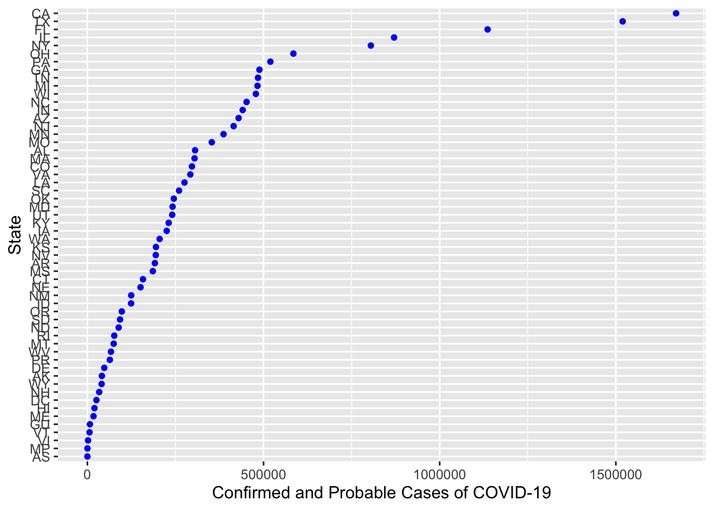
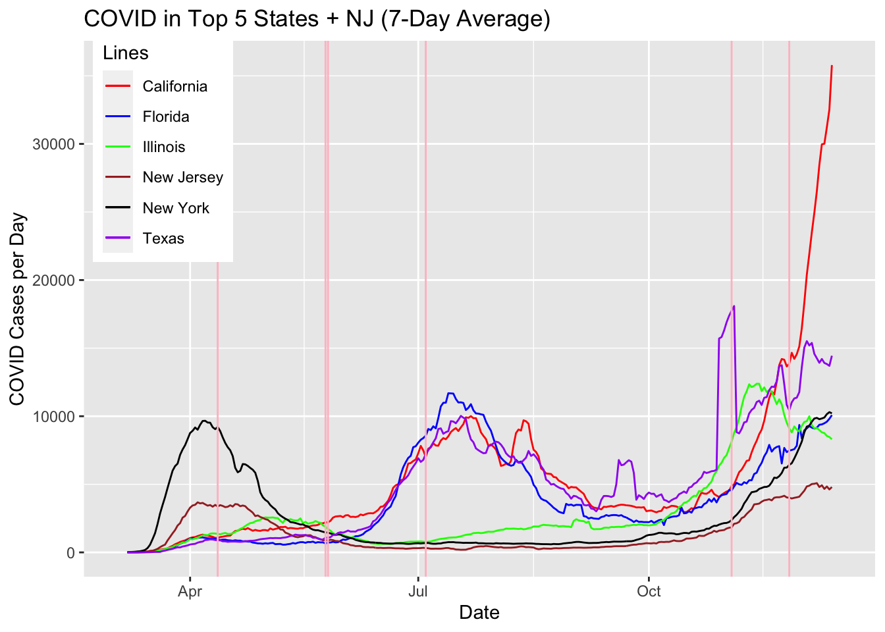
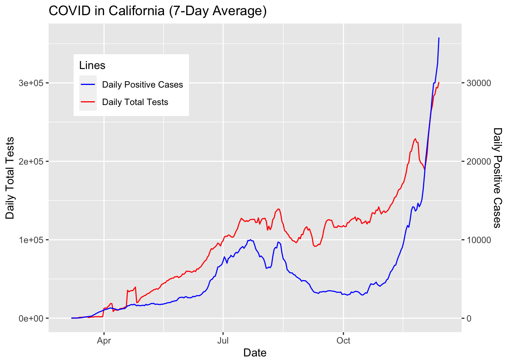

Chapter 2 Data sources
COVID-19 caught the world’s attention in January 2020 when the first several cases were reported in Wuhan, China. It quickly spread to places including Iran, South Korea, and Italy in February, and the US had its first wave in March. Since then, over 10 million cases were reported and over 260,000 Americans died. Our group wants to study the patterns in COVID-19 cases and deaths in the United States on national and state levels and recently learned about the COVID Tracking Project (https://covidtracking.com/) at the Atlantic.
The data API page has historical COVID-19 data on the national level (https://api.covidtracking.com/v1/us/daily.csv) and state level (https://api.covidtracking.com/v1/states/daily.csv). The data is also available in json format, but we will proceed with the csv format.
The national level data has the date on a daily basis, cumulative number of positive and negative test results, number of current and cumulative hospitalized people, number of current and cumulative people on ventilators, number of recovered people, and the number of deaths for each day. The state level data has similar information, but for each state. However, certain rows such as antibody test results are not available for every state, so we will proceed with columns mentioned above, which are available for all states. We can also feature engineer and calculate the number of new cases/hospitalizations/deaths/test results.
Furthermore, we will research throughout the project to gather the current events data for the United States in 2020. These data points will be used in the visualizations as key dates that could have sparked an increase in the COVID-19 cases (e.g. Easter, Memorial Day, Protests, Election). At first, we will refer to “2020 in the United States” Wikipedia page to find more reliable sources about the important events and their settings in 2020. The sources will increase throughout the project and they will be cited in Works Cited.



